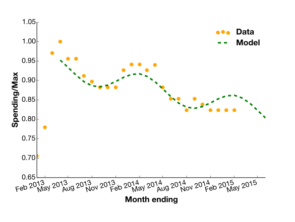

Analysis for PR
Stories for press releases
I analysed consumer spending data as part of a PR campaign that was covered in over 80 local news websites and news aggregators.
Skills employed: Excel, data visualisation, report writing, time series projections, multivariate regression analysis, Python (numpy, scipy, matplotlib), project design, Linux
A segment of consumers' spending on a product category over 2 years, with the model showing the downwards trend with seasonal variation.
PR for a shopping platform
I worked with a PR company to help represent an online shopping platform. This PR company specialises in low cost, high exposure marketing, aiming for broad coverage in the media and online.
Challenge
Using internal customer data on online consumer spending, my analysis formed the basis of blog articles and press releases, designed to increase the coverage and the user base of this online platform. I was given a very substantial dataset to extract insights that would interest readers. There were many thousands of users and hundreds of thousands of purchases, with hundreds of different descriptors.
This data required cleaning and careful handling, with challenges common to data problems; some of the most interesting descriptors had very few purchases and fluctuated rapidly, there were often unrepresentative data points and sometimes quite clear trends that defied any reasonable explanation, or were much more extreme than found in analysis of other, more accepted, data.
Solution
There were trends and insights that could be extracted, customer behaviours that seemed very interesting to us. I presented these in reports and spreadsheets, explaining both the results and the methodology.
Results
The articles were published in over 80 local news websites, and covered by major news aggregation websites. Although not targeted, this level of coverage would have been expensive through more conventional marketing.
We went on to work together on more projects and bids.